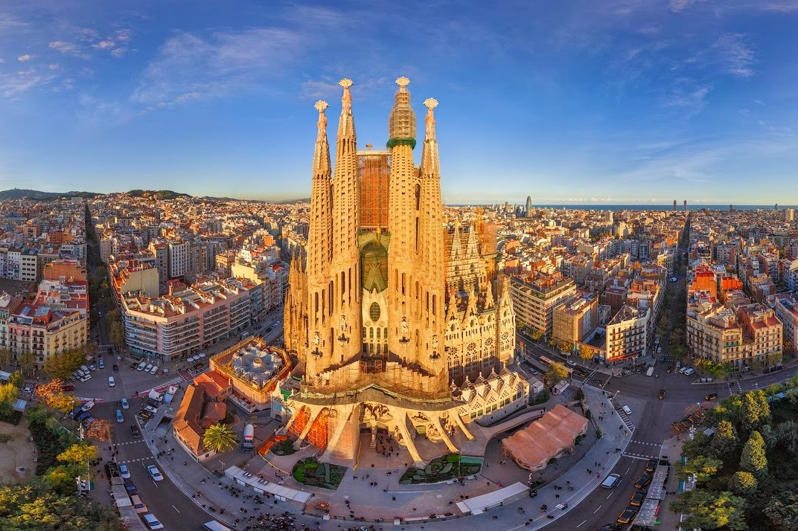

Я народилась 26.02.2002 у м. Луганськ.
Освіта:
Барселона - чудове місто, яке запам'яталось мені на все життя. Це надзвичайно гарне місто, з вишуканою архітектурою, прекрасним кріматом та добрими і привітними людьми. Серед будівель, які є візитними картками Барселони багато робот Антоніо Гауді - видатного архітектора. Найбільш монументальна його робота, будівництво якої триває вде понад сто років - Саграда Фамілія. Ця будівля є справжнім витвором мистецтва.
